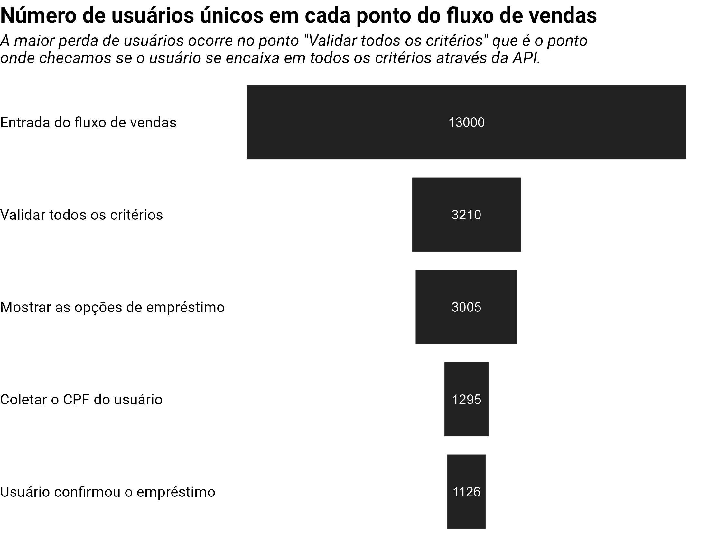

1 Introdução
Este artigo descreve um exemplo real em que eu e meu time usamos dados para convencer o nosso cliente na época (que é um dos maiores bancos do mercado brasileiro) a tomar uma melhor decisão. Agradecimentos especiais ao Guilherme Goes e ao Paulo Gonçalves. Ambos me ajudaram a montar e apresentar essas ideias e insigths para o nosso cliente.
Em resumo, tomar decisões é difícil. Mas você sempre toma uma decisão melhor quando você tem dados para guiá-lo em direção a um resultado melhor e mais seguro. Quando você não tem dados para te defender, você está basicamente no escuro. Ou seja, você toma a decisão, mas não sabe antecipadamente quais são os possíveis resultados dessa decisão. Você apenas espera o melhor, e esta é sempre uma posição difícil de se estar.
Todos os dados, gráficos e imagens mostrados neste artigo são meramente ilustrativos. Portanto, eles não representam os dados reais de Blip ou do banco envolvido de nenhuma forma ou dimensão!
2 Um analista de dados deveria focar em entender o negócio
Você provavelmente vai notar que grande parte deste artigo é dedicado a contextualizar e explicar o negócio por trás deste exemplo.
Isso é intencional! Porque, um dos reais valores deste artigo é mostrar que chegamos a uma boa proposta para o nosso cliente, porque nós entendemos o negócio desse cliente, e levantamos algumas hipóteses boas sobre esse negócio, e ao analisarmos essas hipóteses nós conseguimos chegar a uma boa nova estratégia.
Se você não entende o negócio que está analisando, é menos provável que você encontre uma boa estratégia ou uma boa análise de dados. Em outras palavras, ao ter um bom entendimento do negócio, você provavelmente terá ideias muito melhores sobre “como” analisar os dados que possui.
3 Contexto
Em resumo, o nosso cliente era um grande banco brasileiro, um dos maiores do mercado. O banco estava utilizando nossa plataforma digital para vender diversos produtos e serviços pelo WhatsApp. Nosso trabalho foi analisar os dados gerados pela plataforma para entender como o banco poderia aumentar suas vendas dentro deste canal.
3.1 O produto de empréstimo com garantia
O empréstimo com garantia era um dos diversos produtos oferecidos pelo banco no WhatsApp. Para adquirir este produto, o usuário precisava responder diversas perguntas, e também, se enquadrar em alguns critérios.
Dependendo do tipo de setor em que você atua, você pode chamar isso de “fluxo de vendas”, ou “caminho de vendas”, que nada mais é do que o caminho (ou as etapas) que o usuário precisa seguir para adquirir o produto que você está vendendo.
A maioria das empresas deseja tornar esse caminho o mais curto possível para que o usuário chegue ao produto com mais rapidez. Porém, estamos falando de um empréstimo, então o banco certamente precisa de muitas informações pessoais e financeiras do usuário antes de conceder o empréstimo.
Ou seja, neste exemplo, o usuário precisava responder uma quantidade considerável de perguntas pelo WhatsApp para chegar à etapa final do caminho de vendas para adquirir o empréstimo.
A maioria dessas perguntas solicitava algumas informações pessoais, para verificar se esse usuário específico se enquadrava ou não em alguns critérios importantes. A maioria desses critérios eram bastante comuns (ou o standard) para qualquer tipo de empréstimo. Por exemplo, a pessoa não deveria ter nenhuma dívida legal com o governo. Alguns outros critérios eram puramente financeiros e patrimoniais, e também eram uma prática muito comum entre os bancos, como… a pessoa precisa estar totalmente empregada, precisa ter um carro totalmente pago, e, esse carro precisa ser uma propriedade pessoal da pessoa, ou seja, não poderia ser um carro emprestado de outra pessoa.
3.2 Um critério estranho
Porém um dos vários critérios era um pouco estranho para nós. Identificar exatamente qual critério era esse não é importante para o conteúdo deste artigo. Portanto, vamos dizer apenas que, para que um usuário consiga adquirir esse empréstimo, ele precisava necessariamente ser elegível para três modalidades diferentes.
Cada modalidade correspondia a um tipo diferente de empréstimo. Se o usuário não fosse elegível a todas essas três modalidades (ou tipos de empréstimo), nós automaticamente rejeitamos a solicitação de empréstimo desse usuário.
Em essência, tínhamos um fluxo que funcionava mais ou menos assim:
Cada vez que um usuário entrava em nosso fluxo, nós coletamos o CPF desse usuário. Pois com esse CPF podemos usar a API para verificar múltiplas informações sobre essa pessoa de uma vez só. Uma das muitas coisas que nós verificávamos nessa chamada de API, era se esse usuário se encaixava no critério estranho que descrevemos. Isto é, nós conferíamos se esse usuário era elegível ou não às três modalidades de empréstimo.
3.3 Por que esse critério era estranho?
Na nossa cabeça, este era um critério muito estranho, porque… se uma usuária chamada “Ana” por exemplo for elegível para a modalidade A, então, por que não oferecer um empréstimo da modalidade A para a “Ana”? Como um outro exemplo, se um o usuário “Mike” é elegível para ambas as modalidades A e B, então por que não oferecer ambas as modalidades (A e B) para ele? Ou seja, por que não oferecer ao usuário qualquer tipo de empréstimo ao qual ele é elegível?
Por que apenas usuários que são elegíveis para todas as três modalidades (A, B e C) podem adquirir o empréstimo? Na nossa cabeça esse critério não fazia muito sentido, pois se um usuário for elegível a uma modalidade de empréstimo, ele deveria ser capaz de obter um empréstimo nesta modalidade ao qual ele tem direito.
3.4 Por que esse critério existia?
Mas vamos encara um fato. Apesar de este ser um critério estranho, certamente existe uma razão para ele existir. Nada existe sem uma razão. Nós imaginamos que esse critério estranho existia provavelmente por causa de:
- uma estratégia MVP.
- ou de uma estratégia de risco, em outras palavras, por causa de um trade-off.
Uma estratégia MVP significa que o banco decidiu incluir esse critério estranho porque incluí-lo reduziria muito a complexidade do desenvolvimento do fluxo de vendas, e, portanto, ao simplificar o desenvolvimento, o banco poderia entregar um MVP (minimal viable product, ou, produto mínimo viável) o mais rápido possível e, como consequência, ele poderia começar a lucrar com esse produto mais rapidamente.
Por outro lado, uma estratégia de risco significa que o banco decidiu incluir este critério estranho, porque ele provavelmente estimou que o risco é consideravelmente maior para pessoas que não são elegíveis para as três modalidades. Se o risco estimado for muito alto, então o banco tem um bom motivo para não oferecer esse empréstimo a pessoas que são elegíveis a apenas uma ou duas modalidades diferentes.
Os bancos enfrentam constantemente uma escolha (ou uma balança) entre risco e lucro. Ou seja, um empréstimo de qualquer tipo é sempre uma boa oportunidade de lucro para o banco. No entanto, esta oportunidade de lucro tem sempre um custo atrelado a ela. Esse custo aparece principalmente na forma de risco para o banco.
É por isso que os bancos são normalmente muito bons em analisar e estimar riscos. Quando uma pessoa busca adquirir um empréstimo, o banco passa a analisar diversos fatores para estimar o quanto arriscado é conceder um empréstimo a essa pessoa.
4 O que nós descobrimos
Independentemente de qual das opções acima tenha sido realmente a estratégia exata adotada pelo banco, nós tínhamos a hipótese de que esta regra de negócio (ou este “critério estranho”) estava afetando severamente o resultado das vendas.
Criamos essa hipótese, pois nós percebemos uma grande perda de usuários na etapa do fluxo de vendas onde fazemos todas as múltiplas validações através da API, verificando se o usuário se enquadrava ou não em todos os critérios e regras de negócio.

Nós não sabíamos qual dos muitos critérios específicos era a verdadeira fonte desta perda. Mas nós tínhamos a suspeita de que o critério “elegível para todas as 3 modalidades” era o critério problemático que gerava essa enorme perda.
Em outras palavras, nós suspeitamos que essa estratégia de rejeitar usuários que não possuíam as três modalidades não valia a pena, independente de quais decisões o banco tenha realmente tomado para incluir esse critério no fluxo de vendas. Mas precisávamos confirmar esta hipótese.
Nós tínhamos acesso aos dados retornados pela API (a que usamos para puxar várias informações do usuário), e com esses dados, nós poderíamos potencialmente identificar quais usuários possuíam as três modalidades e quais não possuíam. Então eu montei um script de R simples para coletar através da API os dados de cada usuário que visitou o nosso fluxo de vendas no último mês, e coloquei esse script para rodar durante a noite.
No dia seguinte, eu tinha todos os dados localmente na minha máquina, que tinham um formato parecido com esse:
[
{
"username":"Ana",
"cpf":"12212212212",
"loan_analysis":{
"loan_modalities_elegible_to":["A","B"]
}
},
{
"username":"Mike",
"cpf":"13313313313",
"loan_analysis":{
"loan_modalities_elegible_to":[]
}
},
{
"username":"Arthur",
"cpf":"14414414414",
"loan_analysis":{
"loan_modalities_elegible_to":["A","B","C"]
}
}
]Começamos então a analisar esses dados, investigando os metadados de cada usuário e potencialmente medindo o tamanho do buraco que essa regra de negócio estava criando.
Como resultado, descobrimos que o banco estava constantemente perdendo uma grande oportunidade por causa desse critério estranho, ou, dessa regra de negócio específica. Fazendo algumas contas básicas, identificamos que 67% dos usuários que visitaram nosso canal não eram elegíveis às três modalidades. Isso significa que 67% dos usuários que entravam em nosso canal eram automaticamente rejeitados. Estávamos constantemente perdendo uma grande quantidade de potenciais leads porque eles não se enquadravam nesse critério.
Tendo isso em mente, por exemplo, se 13.000 usuários entrassem em nosso canal, apenas (1 - 0,67) x 13.000 = 4.290 desses usuários poderiam potencialmente terminar o fluxo e adquirir o empréstimo. Os 8.710 usuários restantes eram automaticamente perdidos. Eles eram rejeitados porque não tinham essas três modalidades.
Essa descoberta gerou algumas possibilidades importantes para nós:
- Estamos alcançando o público certo?
- Talvez devêssemos focar em atrair apenas pessoas que possuem as três modalidades para o nosso canal?
- Este critério ou regra de negócio vale a pena?
5 Usando dados para atingir um resultado melhor
Nosso trabalho foi usar os dados que coletamos da API para mostrar ao banco que, os ganhos potenciais de vendermos diferentes tipos de empréstimos para esses usuários que não tinham as três modalidades eram muito maiores do que o risco que esses usuários ofereciam, ou muito maiores que o esforço necessário para desenvolver essa nova estratégia de vendas no fluxo.
Ou seja, usando dados, nós podiamos mostrar ao banco (em números) o tamanho da oportunidade que ele estava perdendo. E foi exatamente isso que fizemos. Nosso argumento foi basicamente dividido em duas partes distintas:
- o tamanho do buraco, ou da perda que estávamos tendo;
- o tamanho do ganho potencial que poderíamos ter.
A primeira parte da nossa apresentação estava focada nos 67%. Nós mostramos ao banco que 67% dos usuários (que é um número enorme) eram constantemente rejeitados no fluxo. Mas este número por si só não tem muito significado. Desde que o banco esteja maximizando o seu lucro, ele não se importa se ele está recusando 60%, 70%, ou 80% dos usuários.
É por isso que na segunda parte da apresentação fizemos algumas contas básicas para estimar os ganhos potenciais que eles estavam perdendo por não venderem para esses 67% de usuários.
6 A nova estratégia de vendas
Uma rápida recapitulação. Cada usuário que entrava no nosso fluxo de vendas desejava obter um empréstimo. Porém, esse usuário precisava ser elegível a três tipos diferentes de empréstimo para realmente ser capaz de adquirir o empréstimo que desejava por meio do nosso canal.
Mas, e se mudarmos esse fluxo de vendas, para que:
- O usuário não precise ser elegível às três modalidades para adquirir um empréstimo;
- Se um usuário for elegível a uma modalidade específica, então devemos oferecer um empréstimo dessa modalidade a que ele é elegível;
- Caso um usuário seja elegível a mais de uma modalidade, então, devemos oferecer múltiplas opções de empréstimos para ele, uma para cada modalidade a que ele é elegível;
Usando os mesmos dados da API que usamos para chegar aos 67%, nós também estimamos que, se alterássemos o fluxo de vendas para que ele se ajustasse às condições acima, aumentaríamos a cobertura de usuários para 96,8%! Isto significa que poderíamos vender um empréstimo a 96,8% dos usuários que entrassem no nosso fluxo de vendas, em vez de apenas 33%.
Caso você esteja pensando que 33% + 67% deveria ser igual a 100%, você está se esquecendo de que o usuário precisa se enquadrar em alguns outros critérios que não mencionei aqui. Ou seja, 96,8 - 100 = 3,2% dos usuários ainda seriam rejeitados por não se enquadrarem em outros critérios necessários.
7 O resultado final
O tempo e o esforço necessários para desenvolver esta nova estratégia no fluxo de vendas eram relativamente baixos e os ganhos potenciais dela eram bastante elevados! Ao aumentar a cobertura de usuários de 33% para 96,8%, estimamos que as vendas poderiam ter um aumento potencial de 193%. Spoiler! Essa estimativa foi muito baixa em comparação com o resultado final que obtivemos. Mas é assim que estimativas funcionam, não é mesmo? São apenas estimativas.
Então os gerentes do banco ficaram muito felizes com a proposta. Os gestores rapidamente aceitaram a ideia. Um baixo esforço para um ganho potencial alto.
Se você pensar sobre, essa nova estratégia que criamos era muito simples. Ela apenas incluía mais opções para os usuários que não se enquadravam no cenário ideal do banco. Mas apesar dessa estratégia ser simples, nós escrevemos uma proposta bem curta, clara e eficaz (eram basicamente apenas 4 slides). Nós mostramos o tamanho do buraco ao banco e também mostramos o tamanho da oportunidade que poderíamos obter se implementássemos essa nossa nova estratégia, e também mostrámos que esta nova estratégia era relativamente fácil e rápida de ser implementada no fluxo.
No entanto, o resultado final foi enorme. No primeiro mês após implementarmos esta nova estratégia no ambiente de produção, as vendas aumentaram aproximadamente 142%, já no segundo mês, o aumento chegou a 400%. As vendas deste empréstimo específico têm uma forte componente sazonal, por isso temos uma variação tão grande de 142% a 400%. Mas de qualquer modo, isto demonstra o impacto positivo que a nossa nova estratégia obteve. O resultado final de 400% de aumento de vendas com a nossa proposta foi enorme.
8 Conclusão
Identificamos um critério estranho que nosso cliente incluiu no fluxo de vendas. Levantamos algumas hipóteses simples sobre esse critério estranho e usamos dados para confirmar ou testar essa hipótese.
Ao analisar esses dados, identificamos uma grande oportunidade para o nosso cliente. Construímos então uma apresentação simples com uma proposta ao nosso cliente, com os números que calculamos a partir da análise dos dados que fizemos.
No final, esta proposta foi um grande sucesso para a nossa equipe, e também para o nosso cliente que obteve um grande aumento de vendas após implementarmos as melhorias que propusemos.